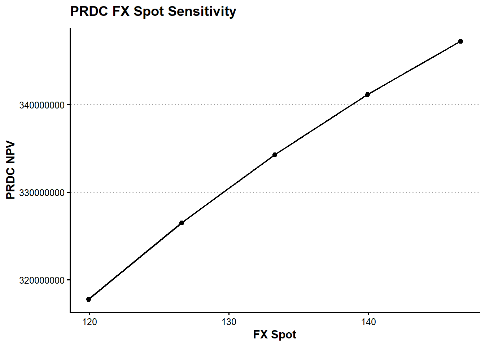

tbl_prdc_trade <- tribble(
~trade_ID,
~valuation_date,
~effective_date,
~termination_date,
~intro_coupon_end_date,
~notional,
~intro_coupon_rate,
~coupon_frequency_months,
~coupon_fx_base,
~coupon_leverage,
~coupon_subtraction,
~coupon_floor,
~coupon_cap,
"PRDC-001",
as.Date("2023-04-11"),
as.Date("2015-09-03"),
as.Date("2041-09-03"),
as.Date("2016-09-03"),
300000000,
0.022,
6L,
120,
0.122,
0.10,
0,
0.022
)
show_table_LFL(tbl_prdc_trade)
#> # A tibble: 1 × 13
#> trade_ID valuation_date effective_date termination_date intro_coupon_end_date
#> <chr> <date> <date> <date> <date>
#> 1 PRDC-001 2023-04-11 2015-09-03 2041-09-03 2016-09-03
#> notional intro_coupon_rate coupon_frequency_months coupon_fx_base
#> <dbl> <dbl> <int> <dbl>
#> 1 300000000 0.022 6 120
#> coupon_leverage coupon_subtraction coupon_floor coupon_cap
#> <dbl> <dbl> <dbl> <dbl>
#> 1 0.122 0.1 0 0.022第III-3章 PRDCによる金融リスク計算システム
第III-1章では、金融システムをデータと計算関数の組合せとして捉え、map()をfuture_map()へ置き換えることで、一台のコンピュータ上の計算を並列化した。第III-2章では、同じ設計をリモート関数、ジョブキューおよび複数のワーカーへ拡張した。
本章では、第II-9章で構築したPRDC評価を利用し、本書全体の最後に一つの金融リスク計算システムを組み立てる。
以前、このような仕組みを構築するためには、高価な専用ソフトウェア、大規模な計算基盤および多人数の開発体制が必要であった。しかし、データモデルを明確にし、金融計算を入力と出力が明示された関数として設計すれば、小規模な環境でも同じ考え方を再現できる。
本章で構築する流れは次である。
Trade Data
Market Data
Calibration Data
↓
Scenario Grid
↓
future_map()
↓
PRDC Pricing Function
↓
Risk Table
↓
Arrow / Parquet
↓
Risk Report本章の目的は、PRDCモデルをもう一度詳しく説明することではない。第II部で作成した価格評価関数を、データ中心設計と関数型プログラミングによって多数のシナリオへ適用する方法を示すことである。
3.1 金融リスク計算システムの構成
金融リスク計算では、取引条件、市場条件、モデル条件および計算条件を分離する。
Trade Data
商品条件
元本
満期
Coupon条件
Market Data
FX Spot
Domestic Rate
Foreign Rate
Discount Rate
Calibration Data
FX Volatility
Correlation
Model Parameters
Calculation Data
Path Count
Random Seed
Worker Setting第II-9章のPRDCは、Domestic金利、Foreign金利、FX SpotおよびFX Volatilityを使う一因子のGarman–Kohlhagenモデルで評価している。このモデルでは相関係数は価格計算へ直接入らない。
一方、本格的な多因子PRDCでは、Domestic金利、Foreign金利およびFXの相関が必要になる。そこで本章のデータモデルには最初から相関係数を含める。ただし、現在の一因子PRDC評価では、相関係数を将来のモデル拡張用キャリブレーション項目として保存し、実際の価格感応度はFX SpotとFX Volatilityについて計算する。
取引データ
基準市場データとキャリブレーションデータ
tbl_prdc_market <- tribble(
~market_data_ID,
~fx_spot,
~domestic_rate,
~foreign_rate,
~discount_rate,
"MKT-BASE",
133.2681,
0.01,
0.03,
0.005
)
tbl_prdc_calibration <- tribble(
~calibration_ID,
~fx_volatility,
~correlation,
~correlation_active,
"CAL-BASE",
0.10,
0.00,
FALSE
)
tbl_prdc_calculation <- tribble(
~calculation_ID,
~number_of_paths,
~random_seed,
"CALC-BASE",
500L,
123L
)
show_table_LFL(tbl_prdc_market)
#> # A tibble: 1 × 5
#> market_data_ID fx_spot domestic_rate foreign_rate discount_rate
#> <chr> <dbl> <dbl> <dbl> <dbl>
#> 1 MKT-BASE 133.27 0.01 0.03 0.005
show_table_LFL(tbl_prdc_calibration)
#> # A tibble: 1 × 4
#> calibration_ID fx_volatility correlation correlation_active
#> <chr> <dbl> <dbl> <lgl>
#> 1 CAL-BASE 0.1 0 FALSE
show_table_LFL(tbl_prdc_calculation)
#> # A tibble: 1 × 3
#> calculation_ID number_of_paths random_seed
#> <chr> <int> <int>
#> 1 CALC-BASE 500 123最初のHTMLドラフトでは計算時間を抑えるため、パス数を500本とする。結果確認後にパス数を増やす。
3.2 PRDC価格評価関数
第II-9章で使用した商品条件とモデル条件から、PRDC評価に必要なSchedule、CurveおよびFX Processを作成する。
price_prdc_scenario_LFL <- function(
trade,
market,
calibration,
calculation
) {
valuation_date <- trade$valuation_date[[1]]
effective_date <- trade$effective_date[[1]]
termination_date <- trade$termination_date[[1]]
intro_coupon_end_date <-
trade$intro_coupon_end_date[[1]]
GaussQuant::set_eval_date_GQL(
valuation_date
)
valuation_date_ql <-
GaussQuant::date_GQL(
valuation_date
)
effective_date_ql <-
GaussQuant::date_GQL(
effective_date
)
termination_date_ql <-
GaussQuant::date_GQL(
termination_date
)
intro_coupon_end_date_ql <-
GaussQuant::date_GQL(
intro_coupon_end_date
)
coupon_schedule <- QuantLib::Schedule(
effective_date_ql,
termination_date_ql,
GaussQuant::period_months_GQL(
trade$coupon_frequency_months[[1]]
),
QuantLib::TARGET(),
"ModifiedFollowing",
"ModifiedFollowing",
"Backward",
FALSE
)
intro_coupon_schedule <- QuantLib::Schedule(
effective_date_ql,
intro_coupon_end_date_ql,
GaussQuant::period_months_GQL(
trade$coupon_frequency_months[[1]]
),
QuantLib::TARGET(),
"ModifiedFollowing",
"ModifiedFollowing",
"Backward",
FALSE
)
intro_coupon_dates <-
GaussQuant::schedule_date_vector_GQL(
intro_coupon_schedule
)
day_counter <- QuantLib::Actual360()
domestic_curve <-
GaussQuant::flat_curve_GQL(
reference_date =
valuation_date_ql,
rate =
market$domestic_rate[[1]],
day_counter =
day_counter,
compounding =
"Continuous"
)
foreign_curve <-
GaussQuant::flat_curve_GQL(
reference_date =
valuation_date_ql,
rate =
market$foreign_rate[[1]],
day_counter =
day_counter,
compounding =
"Continuous"
)
discount_curve <-
GaussQuant::flat_curve_GQL(
reference_date =
valuation_date_ql,
rate =
market$discount_rate[[1]],
day_counter =
day_counter,
compounding =
"Continuous"
)
domestic_curve_handle <-
QuantLib::YieldTermStructureHandle(
domestic_curve
)
foreign_curve_handle <-
QuantLib::YieldTermStructureHandle(
foreign_curve
)
volatility_curve <-
QuantLib::BlackConstantVol(
valuation_date_ql,
QuantLib::NullCalendar(),
GaussQuant::quote_handle_GQL(
calibration$fx_volatility[[1]]
),
day_counter
)
volatility_handle <-
QuantLib::BlackVolTermStructureHandle(
volatility_curve
)
fx_process <-
GaussQuant::fx_process_GQL(
spot =
market$fx_spot[[1]],
foreign_curve_handle =
foreign_curve_handle,
domestic_curve_handle =
domestic_curve_handle,
volatility_handle =
volatility_handle
)
result <- GaussQuant::prdc_npv_GQL(
valuation_date =
valuation_date,
coupon_schedule =
coupon_schedule,
process =
fx_process,
discount_curve =
discount_curve,
notional =
trade$notional[[1]],
fx_base =
trade$coupon_fx_base[[1]],
leverage =
trade$coupon_leverage[[1]],
subtraction =
trade$coupon_subtraction[[1]],
floor_rate =
trade$coupon_floor[[1]],
cap_rate =
trade$coupon_cap[[1]],
day_counter =
day_counter,
intro_coupon_dates =
intro_coupon_dates,
intro_coupon_rate =
trade$intro_coupon_rate[[1]],
n_paths =
calculation$number_of_paths[[1]],
seed =
calculation$random_seed[[1]],
redemption_amount =
trade$notional[[1]],
return_details =
FALSE
)
tibble(
trade_ID =
trade$trade_ID[[1]],
fx_spot =
market$fx_spot[[1]],
fx_volatility =
calibration$fx_volatility[[1]],
correlation =
calibration$correlation[[1]],
correlation_active =
calibration$correlation_active[[1]],
number_of_paths =
calculation$number_of_paths[[1]],
random_seed =
calculation$random_seed[[1]],
prdc_npv =
as.numeric(result)
)
}この関数は、取引データ、市場データ、キャリブレーションデータおよび計算条件を受け取り、評価結果を一行のtibbleとして返す。
基準価格
tbl_prdc_base_result <-
price_prdc_scenario_LFL(
trade =
tbl_prdc_trade,
market =
tbl_prdc_market,
calibration =
tbl_prdc_calibration,
calculation =
tbl_prdc_calculation
)
show_table_LFL(tbl_prdc_base_result)
#> # A tibble: 1 × 8
#> trade_ID fx_spot fx_volatility correlation correlation_active number_of_paths
#> <chr> <dbl> <dbl> <dbl> <lgl> <int>
#> 1 PRDC-001 133.27 0.1 0 FALSE 500
#> random_seed prdc_npv
#> <int> <dbl>
#> 1 123 334081804.3.3 シナリオグリッドと並列計算
リスク計算では、一つの市場条件だけでなく、複数の市場条件とモデル条件を組み合わせる。
本章では、FX Spot、FX Volatilityおよび相関係数のグリッドを作成する。
base_fx_spot <-
tbl_prdc_market$fx_spot[[1]]
tbl_prdc_scenario <- tidyr::crossing(
fx_spot = base_fx_spot *
c(0.90, 0.95, 1.00, 1.05, 1.10),
fx_volatility =
c(0.075, 0.10, 0.125),
correlation =
c(-0.50, 0.00, 0.50)
) |>
mutate(
scenario_ID = row_number(),
correlation_active = FALSE,
.before = 1
)
show_table_LFL(
tbl_prdc_scenario,
n = Inf
)
#> # A tibble: 45 × 5
#> scenario_ID correlation_active fx_spot fx_volatility correlation
#> <int> <lgl> <dbl> <dbl> <dbl>
#> 1 1 FALSE 119.94 0.075 -0.5
#> 2 2 FALSE 119.94 0.075 0
#> 3 3 FALSE 119.94 0.075 0.5
#> 4 4 FALSE 119.94 0.1 -0.5
#> 5 5 FALSE 119.94 0.1 0
#> 6 6 FALSE 119.94 0.1 0.5
#> 7 7 FALSE 119.94 0.125 -0.5
#> 8 8 FALSE 119.94 0.125 0
#> 9 9 FALSE 119.94 0.125 0.5
#> 10 10 FALSE 126.60 0.075 -0.5
#> 11 11 FALSE 126.60 0.075 0
#> 12 12 FALSE 126.60 0.075 0.5
#> 13 13 FALSE 126.60 0.1 -0.5
#> 14 14 FALSE 126.60 0.1 0
#> 15 15 FALSE 126.60 0.1 0.5
#> 16 16 FALSE 126.60 0.125 -0.5
#> 17 17 FALSE 126.60 0.125 0
#> 18 18 FALSE 126.60 0.125 0.5
#> 19 19 FALSE 133.27 0.075 -0.5
#> 20 20 FALSE 133.27 0.075 0
#> 21 21 FALSE 133.27 0.075 0.5
#> 22 22 FALSE 133.27 0.1 -0.5
#> 23 23 FALSE 133.27 0.1 0
#> 24 24 FALSE 133.27 0.1 0.5
#> 25 25 FALSE 133.27 0.125 -0.5
#> 26 26 FALSE 133.27 0.125 0
#> 27 27 FALSE 133.27 0.125 0.5
#> 28 28 FALSE 139.93 0.075 -0.5
#> 29 29 FALSE 139.93 0.075 0
#> 30 30 FALSE 139.93 0.075 0.5
#> 31 31 FALSE 139.93 0.1 -0.5
#> 32 32 FALSE 139.93 0.1 0
#> 33 33 FALSE 139.93 0.1 0.5
#> 34 34 FALSE 139.93 0.125 -0.5
#> 35 35 FALSE 139.93 0.125 0
#> 36 36 FALSE 139.93 0.125 0.5
#> 37 37 FALSE 146.59 0.075 -0.5
#> 38 38 FALSE 146.59 0.075 0
#> 39 39 FALSE 146.59 0.075 0.5
#> 40 40 FALSE 146.59 0.1 -0.5
#> 41 41 FALSE 146.59 0.1 0
#> 42 42 FALSE 146.59 0.1 0.5
#> 43 43 FALSE 146.59 0.125 -0.5
#> 44 44 FALSE 146.59 0.125 0
#> 45 45 FALSE 146.59 0.125 0.5現行の第II-9章の一因子モデルでは、相関係数は価格へ反映されない。そのため、同じSpotとVolatilityで相関だけが異なるシナリオは同じ価格になる。
これはシステムの欠陥ではなく、モデルの境界を明示している。将来、Domestic金利、Foreign金利およびFXを含む多因子モデルへ拡張した場合も、シナリオ表と並列処理の構造はそのまま利用できる。
シナリオを価格評価用データへ変換する
tbl_prdc_scenario_input <-
tbl_prdc_scenario |>
mutate(
market = purrr::map2(
scenario_ID,
fx_spot,
\(scenario_ID,
scenario_fx_spot) {
tbl_prdc_market |>
mutate(
market_data_ID = paste0(
"MKT-",
stringr::str_pad(
scenario_ID,
width = 3,
pad = "0"
)
),
fx_spot = scenario_fx_spot
)
}
),
calibration = purrr::map2(
fx_volatility,
correlation,
\(scenario_volatility,
scenario_correlation) {
tbl_prdc_calibration |>
mutate(
calibration_ID = paste0(
"CAL-V",
stringr::str_replace_all(
format(
scenario_volatility,
trim = TRUE
),
"\\.",
"_"
),
"-R",
stringr::str_replace_all(
format(
scenario_correlation,
trim = TRUE
),
c(
"-" = "M",
"\\." = "_"
)
)
),
fx_volatility =
scenario_volatility,
correlation =
scenario_correlation,
correlation_active =
FALSE
)
}
)
)前のコードではscenario_IDを無名関数の外側から直接参照できないため、市場データIDは次の処理で付ける。
tbl_prdc_scenario_input <-
tbl_prdc_scenario |>
mutate(
market = purrr::map2(
scenario_ID,
fx_spot,
\(scenario_ID,
scenario_fx_spot) {
tbl_prdc_market |>
mutate(
market_data_ID =
paste0(
"MKT-",
stringr::str_pad(
scenario_ID,
width = 3,
pad = "0"
)
),
fx_spot =
scenario_fx_spot
)
}
),
calibration = purrr::map2(
fx_volatility,
correlation,
\(scenario_volatility,
scenario_correlation) {
tbl_prdc_calibration |>
mutate(
fx_volatility =
scenario_volatility,
correlation =
scenario_correlation,
correlation_active =
FALSE
)
}
)
)future_map()による並列価格評価
available_cores <-
future::availableCores()
workers <- max(
1L,
min(
2L,
available_cores - 1L
)
)
future::plan(
future::multisession,
workers = workers
)tbl_prdc_scenario_result <-
tbl_prdc_scenario_input |>
mutate(
result = furrr::future_map2(
market,
calibration,
\(scenario_market,
scenario_calibration) {
price_prdc_scenario_LFL(
trade =
tbl_prdc_trade,
market =
scenario_market,
calibration =
scenario_calibration,
calculation =
tbl_prdc_calculation
)
},
.options =
furrr::furrr_options(
seed = TRUE
)
)
) |>
select(
scenario_ID,
result
) |>
tidyr::unnest(result) |>
arrange(scenario_ID)
future::plan(
future::sequential
)
show_table_LFL(
tbl_prdc_scenario_result,
n = Inf
)
#> # A tibble: 45 × 9
#> scenario_ID trade_ID fx_spot fx_volatility correlation correlation_active
#> <int> <chr> <dbl> <dbl> <dbl> <lgl>
#> 1 1 PRDC-001 119.94 0.075 -0.5 FALSE
#> 2 2 PRDC-001 119.94 0.075 0 FALSE
#> 3 3 PRDC-001 119.94 0.075 0.5 FALSE
#> 4 4 PRDC-001 119.94 0.1 -0.5 FALSE
#> 5 5 PRDC-001 119.94 0.1 0 FALSE
#> 6 6 PRDC-001 119.94 0.1 0.5 FALSE
#> 7 7 PRDC-001 119.94 0.125 -0.5 FALSE
#> 8 8 PRDC-001 119.94 0.125 0 FALSE
#> 9 9 PRDC-001 119.94 0.125 0.5 FALSE
#> 10 10 PRDC-001 126.60 0.075 -0.5 FALSE
#> 11 11 PRDC-001 126.60 0.075 0 FALSE
#> 12 12 PRDC-001 126.60 0.075 0.5 FALSE
#> 13 13 PRDC-001 126.60 0.1 -0.5 FALSE
#> 14 14 PRDC-001 126.60 0.1 0 FALSE
#> 15 15 PRDC-001 126.60 0.1 0.5 FALSE
#> 16 16 PRDC-001 126.60 0.125 -0.5 FALSE
#> 17 17 PRDC-001 126.60 0.125 0 FALSE
#> 18 18 PRDC-001 126.60 0.125 0.5 FALSE
#> 19 19 PRDC-001 133.27 0.075 -0.5 FALSE
#> 20 20 PRDC-001 133.27 0.075 0 FALSE
#> 21 21 PRDC-001 133.27 0.075 0.5 FALSE
#> 22 22 PRDC-001 133.27 0.1 -0.5 FALSE
#> 23 23 PRDC-001 133.27 0.1 0 FALSE
#> 24 24 PRDC-001 133.27 0.1 0.5 FALSE
#> 25 25 PRDC-001 133.27 0.125 -0.5 FALSE
#> 26 26 PRDC-001 133.27 0.125 0 FALSE
#> 27 27 PRDC-001 133.27 0.125 0.5 FALSE
#> 28 28 PRDC-001 139.93 0.075 -0.5 FALSE
#> 29 29 PRDC-001 139.93 0.075 0 FALSE
#> 30 30 PRDC-001 139.93 0.075 0.5 FALSE
#> 31 31 PRDC-001 139.93 0.1 -0.5 FALSE
#> 32 32 PRDC-001 139.93 0.1 0 FALSE
#> 33 33 PRDC-001 139.93 0.1 0.5 FALSE
#> 34 34 PRDC-001 139.93 0.125 -0.5 FALSE
#> 35 35 PRDC-001 139.93 0.125 0 FALSE
#> 36 36 PRDC-001 139.93 0.125 0.5 FALSE
#> 37 37 PRDC-001 146.59 0.075 -0.5 FALSE
#> 38 38 PRDC-001 146.59 0.075 0 FALSE
#> 39 39 PRDC-001 146.59 0.075 0.5 FALSE
#> 40 40 PRDC-001 146.59 0.1 -0.5 FALSE
#> 41 41 PRDC-001 146.59 0.1 0 FALSE
#> 42 42 PRDC-001 146.59 0.1 0.5 FALSE
#> 43 43 PRDC-001 146.59 0.125 -0.5 FALSE
#> 44 44 PRDC-001 146.59 0.125 0 FALSE
#> 45 45 PRDC-001 146.59 0.125 0.5 FALSE
#> number_of_paths random_seed prdc_npv
#> <int> <int> <dbl>
#> 1 500 123 316522073.
#> 2 500 123 316522073.
#> 3 500 123 316522073.
#> 4 500 123 317768256.
#> 5 500 123 317768256.
#> 6 500 123 317768256.
#> 7 500 123 317896344.
#> 8 500 123 317896344.
#> 9 500 123 317896344.
#> 10 500 123 327308562.
#> 11 500 123 327308562.
#> 12 500 123 327308562.
#> 13 500 123 326499769.
#> 14 500 123 326499769.
#> 15 500 123 326499769.
#> 16 500 123 325186860.
#> 17 500 123 325186860.
#> 18 500 123 325186860.
#> 19 500 123 336768079.
#> 20 500 123 336768079.
#> 21 500 123 336768079.
#> 22 500 123 334264600.
#> 23 500 123 334264600.
#> 24 500 123 334264600.
#> 25 500 123 331768191.
#> 26 500 123 331768191.
#> 27 500 123 331768191.
#> 28 500 123 344915395.
#> 29 500 123 344915395.
#> 30 500 123 344915395.
#> 31 500 123 341153967.
#> 32 500 123 341153967.
#> 33 500 123 341153967.
#> 34 500 123 337694221.
#> 35 500 123 337694221.
#> 36 500 123 337694221.
#> 37 500 123 351928229.
#> 38 500 123 351928229.
#> 39 500 123 351928229.
#> 40 500 123 347228273.
#> 41 500 123 347228273.
#> 42 500 123 347228273.
#> 43 500 123 343006994.
#> 44 500 123 343006994.
#> 45 500 123 343006994.ここで重要なのは、価格評価関数を変更せず、map()をfuture_map()へ置き換えていることである。
Scenario Data
+
Pricing Function
↓
future_map()
↓
Risk Table3.4 感応度とリスクテーブル
基準シナリオを、基準Spot、基準Volatility、相関0として定義する。
tbl_prdc_base_scenario <-
tbl_prdc_scenario_result |>
filter(
dplyr::near(
fx_spot,
tbl_prdc_market$fx_spot[[1]]
),
dplyr::near(
fx_volatility,
tbl_prdc_calibration$
fx_volatility[[1]]
),
dplyr::near(
correlation,
0
)
) |>
slice_head(n = 1)
base_prdc_npv <-
tbl_prdc_base_scenario$
prdc_npv[[1]]各シナリオの基準価格との差を計算する。
tbl_prdc_risk <- tbl_prdc_scenario_result |>
mutate(
base_prdc_npv =
base_prdc_npv,
npv_change =
prdc_npv -
base_prdc_npv,
npv_change_percent =
npv_change /
abs(base_prdc_npv),
spot_change_percent =
fx_spot /
tbl_prdc_market$
fx_spot[[1]] -
1,
volatility_change =
fx_volatility -
tbl_prdc_calibration$
fx_volatility[[1]]
)
show_table_LFL(
tbl_prdc_risk,
n = Inf
)
#> # A tibble: 45 × 14
#> scenario_ID trade_ID fx_spot fx_volatility correlation correlation_active
#> <int> <chr> <dbl> <dbl> <dbl> <lgl>
#> 1 1 PRDC-001 119.94 0.075 -0.5 FALSE
#> 2 2 PRDC-001 119.94 0.075 0 FALSE
#> 3 3 PRDC-001 119.94 0.075 0.5 FALSE
#> 4 4 PRDC-001 119.94 0.1 -0.5 FALSE
#> 5 5 PRDC-001 119.94 0.1 0 FALSE
#> 6 6 PRDC-001 119.94 0.1 0.5 FALSE
#> 7 7 PRDC-001 119.94 0.125 -0.5 FALSE
#> 8 8 PRDC-001 119.94 0.125 0 FALSE
#> 9 9 PRDC-001 119.94 0.125 0.5 FALSE
#> 10 10 PRDC-001 126.60 0.075 -0.5 FALSE
#> 11 11 PRDC-001 126.60 0.075 0 FALSE
#> 12 12 PRDC-001 126.60 0.075 0.5 FALSE
#> 13 13 PRDC-001 126.60 0.1 -0.5 FALSE
#> 14 14 PRDC-001 126.60 0.1 0 FALSE
#> 15 15 PRDC-001 126.60 0.1 0.5 FALSE
#> 16 16 PRDC-001 126.60 0.125 -0.5 FALSE
#> 17 17 PRDC-001 126.60 0.125 0 FALSE
#> 18 18 PRDC-001 126.60 0.125 0.5 FALSE
#> 19 19 PRDC-001 133.27 0.075 -0.5 FALSE
#> 20 20 PRDC-001 133.27 0.075 0 FALSE
#> 21 21 PRDC-001 133.27 0.075 0.5 FALSE
#> 22 22 PRDC-001 133.27 0.1 -0.5 FALSE
#> 23 23 PRDC-001 133.27 0.1 0 FALSE
#> 24 24 PRDC-001 133.27 0.1 0.5 FALSE
#> 25 25 PRDC-001 133.27 0.125 -0.5 FALSE
#> 26 26 PRDC-001 133.27 0.125 0 FALSE
#> 27 27 PRDC-001 133.27 0.125 0.5 FALSE
#> 28 28 PRDC-001 139.93 0.075 -0.5 FALSE
#> 29 29 PRDC-001 139.93 0.075 0 FALSE
#> 30 30 PRDC-001 139.93 0.075 0.5 FALSE
#> 31 31 PRDC-001 139.93 0.1 -0.5 FALSE
#> 32 32 PRDC-001 139.93 0.1 0 FALSE
#> 33 33 PRDC-001 139.93 0.1 0.5 FALSE
#> 34 34 PRDC-001 139.93 0.125 -0.5 FALSE
#> 35 35 PRDC-001 139.93 0.125 0 FALSE
#> 36 36 PRDC-001 139.93 0.125 0.5 FALSE
#> 37 37 PRDC-001 146.59 0.075 -0.5 FALSE
#> 38 38 PRDC-001 146.59 0.075 0 FALSE
#> 39 39 PRDC-001 146.59 0.075 0.5 FALSE
#> 40 40 PRDC-001 146.59 0.1 -0.5 FALSE
#> 41 41 PRDC-001 146.59 0.1 0 FALSE
#> 42 42 PRDC-001 146.59 0.1 0.5 FALSE
#> 43 43 PRDC-001 146.59 0.125 -0.5 FALSE
#> 44 44 PRDC-001 146.59 0.125 0 FALSE
#> 45 45 PRDC-001 146.59 0.125 0.5 FALSE
#> number_of_paths random_seed prdc_npv base_prdc_npv npv_change
#> <int> <int> <dbl> <dbl> <dbl>
#> 1 500 123 316522073. 334264600. -17742527.
#> 2 500 123 316522073. 334264600. -17742527.
#> 3 500 123 316522073. 334264600. -17742527.
#> 4 500 123 317768256. 334264600. -16496344.
#> 5 500 123 317768256. 334264600. -16496344.
#> 6 500 123 317768256. 334264600. -16496344.
#> 7 500 123 317896344. 334264600. -16368257.
#> 8 500 123 317896344. 334264600. -16368257.
#> 9 500 123 317896344. 334264600. -16368257.
#> 10 500 123 327308562. 334264600. -6956039.
#> 11 500 123 327308562. 334264600. -6956039.
#> 12 500 123 327308562. 334264600. -6956039.
#> 13 500 123 326499769. 334264600. -7764831.
#> 14 500 123 326499769. 334264600. -7764831.
#> 15 500 123 326499769. 334264600. -7764831.
#> 16 500 123 325186860. 334264600. -9077740.
#> 17 500 123 325186860. 334264600. -9077740.
#> 18 500 123 325186860. 334264600. -9077740.
#> 19 500 123 336768079. 334264600. 2503478.
#> 20 500 123 336768079. 334264600. 2503478.
#> 21 500 123 336768079. 334264600. 2503478.
#> 22 500 123 334264600. 334264600. 0
#> 23 500 123 334264600. 334264600. 0
#> 24 500 123 334264600. 334264600. 0
#> 25 500 123 331768191. 334264600. -2496410.
#> 26 500 123 331768191. 334264600. -2496410.
#> 27 500 123 331768191. 334264600. -2496410.
#> 28 500 123 344915395. 334264600. 10650795.
#> 29 500 123 344915395. 334264600. 10650795.
#> 30 500 123 344915395. 334264600. 10650795.
#> 31 500 123 341153967. 334264600. 6889367.
#> 32 500 123 341153967. 334264600. 6889367.
#> 33 500 123 341153967. 334264600. 6889367.
#> 34 500 123 337694221. 334264600. 3429620.
#> 35 500 123 337694221. 334264600. 3429620.
#> 36 500 123 337694221. 334264600. 3429620.
#> 37 500 123 351928229. 334264600. 17663629.
#> 38 500 123 351928229. 334264600. 17663629.
#> 39 500 123 351928229. 334264600. 17663629.
#> 40 500 123 347228273. 334264600. 12963673.
#> 41 500 123 347228273. 334264600. 12963673.
#> 42 500 123 347228273. 334264600. 12963673.
#> 43 500 123 343006994. 334264600. 8742394.
#> 44 500 123 343006994. 334264600. 8742394.
#> 45 500 123 343006994. 334264600. 8742394.
#> npv_change_percent spot_change_percent volatility_change
#> <dbl> <dbl> <dbl>
#> 1 -0.053079 -0.1 -0.025
#> 2 -0.053079 -0.1 -0.025
#> 3 -0.053079 -0.1 -0.025
#> 4 -0.049351 -0.1 0
#> 5 -0.049351 -0.1 0
#> 6 -0.049351 -0.1 0
#> 7 -0.048968 -0.1 0.025
#> 8 -0.048968 -0.1 0.025
#> 9 -0.048968 -0.1 0.025
#> 10 -0.020810 -0.050000 -0.025
#> 11 -0.020810 -0.050000 -0.025
#> 12 -0.020810 -0.050000 -0.025
#> 13 -0.023230 -0.050000 0
#> 14 -0.023230 -0.050000 0
#> 15 -0.023230 -0.050000 0
#> 16 -0.027157 -0.050000 0.025
#> 17 -0.027157 -0.050000 0.025
#> 18 -0.027157 -0.050000 0.025
#> 19 0.0074895 0 -0.025
#> 20 0.0074895 0 -0.025
#> 21 0.0074895 0 -0.025
#> 22 0 0 0
#> 23 0 0 0
#> 24 0 0 0
#> 25 -0.0074684 0 0.025
#> 26 -0.0074684 0 0.025
#> 27 -0.0074684 0 0.025
#> 28 0.031863 0.050000 -0.025
#> 29 0.031863 0.050000 -0.025
#> 30 0.031863 0.050000 -0.025
#> 31 0.020611 0.050000 0
#> 32 0.020611 0.050000 0
#> 33 0.020611 0.050000 0
#> 34 0.010260 0.050000 0.025
#> 35 0.010260 0.050000 0.025
#> 36 0.010260 0.050000 0.025
#> 37 0.052843 0.10000 -0.025
#> 38 0.052843 0.10000 -0.025
#> 39 0.052843 0.10000 -0.025
#> 40 0.038783 0.10000 0
#> 41 0.038783 0.10000 0
#> 42 0.038783 0.10000 0
#> 43 0.026154 0.10000 0.025
#> 44 0.026154 0.10000 0.025
#> 45 0.026154 0.10000 0.025FX Spot感応度
基準Volatilityと相関0のシナリオを抽出する。
tbl_prdc_spot_risk <- tbl_prdc_risk |>
filter(
dplyr::near(
fx_volatility,
tbl_prdc_calibration$
fx_volatility[[1]]
),
dplyr::near(
correlation,
0
)
) |>
arrange(fx_spot)
show_table_LFL(tbl_prdc_spot_risk)
#> # A tibble: 5 × 14
#> scenario_ID trade_ID fx_spot fx_volatility correlation correlation_active
#> <int> <chr> <dbl> <dbl> <dbl> <lgl>
#> 1 5 PRDC-001 119.94 0.1 0 FALSE
#> 2 14 PRDC-001 126.60 0.1 0 FALSE
#> 3 23 PRDC-001 133.27 0.1 0 FALSE
#> 4 32 PRDC-001 139.93 0.1 0 FALSE
#> 5 41 PRDC-001 146.59 0.1 0 FALSE
#> number_of_paths random_seed prdc_npv base_prdc_npv npv_change
#> <int> <int> <dbl> <dbl> <dbl>
#> 1 500 123 317768256. 334264600. -16496344.
#> 2 500 123 326499769. 334264600. -7764831.
#> 3 500 123 334264600. 334264600. 0
#> 4 500 123 341153967. 334264600. 6889367.
#> 5 500 123 347228273. 334264600. 12963673.
#> npv_change_percent spot_change_percent volatility_change
#> <dbl> <dbl> <dbl>
#> 1 -0.049351 -0.1 0
#> 2 -0.023230 -0.050000 0
#> 3 0 0 0
#> 4 0.020611 0.050000 0
#> 5 0.038783 0.10000 0plot_prdc_spot_risk <-
tbl_prdc_spot_risk |>
ggplot(
aes(
x = fx_spot,
y = prdc_npv
)
) +
geom_line(
linewidth = 0.8
) +
geom_point(
size = 2
) +
labs(
x = "FX Spot",
y = "PRDC NPV",
title = "PRDC FX Spot Sensitivity"
)
show_plot_LFL(
add_lagrange_theme_LFL(
plot_prdc_spot_risk
)
)
FX Volatility感応度
tbl_prdc_volatility_risk <-
tbl_prdc_risk |>
filter(
dplyr::near(
fx_spot,
tbl_prdc_market$fx_spot[[1]]
),
dplyr::near(
correlation,
0
)
) |>
arrange(fx_volatility)
show_table_LFL(
tbl_prdc_volatility_risk
)
#> # A tibble: 3 × 14
#> scenario_ID trade_ID fx_spot fx_volatility correlation correlation_active
#> <int> <chr> <dbl> <dbl> <dbl> <lgl>
#> 1 20 PRDC-001 133.27 0.075 0 FALSE
#> 2 23 PRDC-001 133.27 0.1 0 FALSE
#> 3 26 PRDC-001 133.27 0.125 0 FALSE
#> number_of_paths random_seed prdc_npv base_prdc_npv npv_change
#> <int> <int> <dbl> <dbl> <dbl>
#> 1 500 123 336768079. 334264600. 2503478.
#> 2 500 123 334264600. 334264600. 0
#> 3 500 123 331768191. 334264600. -2496410.
#> npv_change_percent spot_change_percent volatility_change
#> <dbl> <dbl> <dbl>
#> 1 0.0074895 0 -0.025
#> 2 0 0 0
#> 3 -0.0074684 0 0.025相関シナリオの確認
tbl_prdc_correlation_scenario <-
tbl_prdc_risk |>
filter(
dplyr::near(
fx_spot,
tbl_prdc_market$fx_spot[[1]]
),
dplyr::near(
fx_volatility,
tbl_prdc_calibration$
fx_volatility[[1]]
)
) |>
select(
scenario_ID,
correlation,
correlation_active,
prdc_npv,
npv_change
) |>
arrange(correlation)
show_table_LFL(
tbl_prdc_correlation_scenario
)
#> # A tibble: 3 × 5
#> scenario_ID correlation correlation_active prdc_npv npv_change
#> <int> <dbl> <lgl> <dbl> <dbl>
#> 1 22 -0.5 FALSE 334264600. 0
#> 2 23 0 FALSE 334264600. 0
#> 3 24 0.5 FALSE 334264600. 0現行モデルではcorrelation_activeがFALSEであるため、相関だけを変更してもPRDC価格は変化しない。この結果は、シナリオ計算システムが相関を無視しているのではなく、現在の価格評価モデルが相関を持たないことを示している。
多因子モデルを追加する場合には、price_prdc_scenario_LFL()の内部だけを変更する。Trade Data、Market Data、Calibration Data、Scenario Grid、future_map()およびRisk Tableの構造は変更しない。
3.5 Arrow保存と金融リスクレポート
シナリオ入力と計算結果をParquetへ保存する。
tbl_prdc_output <- list(
trade_data =
tbl_prdc_trade,
market_data =
tbl_prdc_market,
calibration_data =
tbl_prdc_calibration,
scenario_grid =
tbl_prdc_scenario,
scenario_results =
tbl_prdc_scenario_result,
risk_table =
tbl_prdc_risk
)
vec_prdc_output_files <- c(
trade_data =
file.path(
"risk_system",
"prdc_trade_data.parquet"
),
market_data =
file.path(
"risk_system",
"prdc_market_data.parquet"
),
calibration_data =
file.path(
"risk_system",
"prdc_calibration_data.parquet"
),
scenario_grid =
file.path(
"risk_system",
"prdc_scenario_grid.parquet"
),
scenario_results =
file.path(
"risk_system",
"prdc_scenario_results.parquet"
),
risk_table =
file.path(
"risk_system",
"prdc_risk_table.parquet"
)
)
vec_prdc_output_paths <-
tbl_prdc_output |>
purrr::imap_chr(
\(data, name) {
write_derived_parquet_file_LFL(
data,
vec_prdc_output_files[[name]]
)
}
)
vec_prdc_output_paths
#> trade_data
#> "C:/AnalyticFin/Projects/LagrangeFinance/data/derived/risk_system/prdc_trade_data.parquet"
#> market_data
#> "C:/AnalyticFin/Projects/LagrangeFinance/data/derived/risk_system/prdc_market_data.parquet"
#> calibration_data
#> "C:/AnalyticFin/Projects/LagrangeFinance/data/derived/risk_system/prdc_calibration_data.parquet"
#> scenario_grid
#> "C:/AnalyticFin/Projects/LagrangeFinance/data/derived/risk_system/prdc_scenario_grid.parquet"
#> scenario_results
#> "C:/AnalyticFin/Projects/LagrangeFinance/data/derived/risk_system/prdc_scenario_results.parquet"
#> risk_table
#> "C:/AnalyticFin/Projects/LagrangeFinance/data/derived/risk_system/prdc_risk_table.parquet"保存結果を確認する。
tbl_prdc_risk_check <-
read_derived_parquet_file_LFL(
file.path(
"risk_system",
"prdc_risk_table.parquet"
)
)
tbl_prdc_output_check <- tibble(
expected_rows =
nrow(tbl_prdc_risk),
actual_rows =
nrow(tbl_prdc_risk_check),
same_columns =
identical(
names(tbl_prdc_risk),
names(tbl_prdc_risk_check)
)
)
show_table_LFL(
tbl_prdc_output_check
)
#> # A tibble: 1 × 3
#> expected_rows actual_rows same_columns
#> <int> <int> <lgl>
#> 1 45 45 TRUEstopifnot(
nrow(tbl_prdc_risk_check) ==
nrow(tbl_prdc_risk),
identical(
names(tbl_prdc_risk_check),
names(tbl_prdc_risk)
)
)本章では、第II-9章で構築したPRDC評価を、データ中心設計と関数型プログラミングによる金融リスク計算システムへ拡張した。
Trade Data
Market Data
Calibration Data
↓
Scenario Grid
↓
future_map()
↓
PRDC Pricing
↓
Risk Table
↓
Parquet
↓
Reportこの仕組みの中心は、特定のミドルウェアや高価な計算基盤ではない。データの役割を分離し、価格評価を入力と出力が明確な関数として設計することである。
計算対象をPRDCから債券、OIS、Swap、CDSまたは他の金融商品へ変更する場合も、差し替えるのは価格評価関数である。データの準備、シナリオ生成、並列実行、結果集計およびParquet保存というパイプラインは変わらない。
本書では、第I部でデータを整理し、第II部で金融計算関数を構築し、第III部でそれらを並列・分散計算可能なシステムへ統合した。かつて大規模な費用と人員を必要とした金融計算システムも、データモデルと関数型の計算設計を守ることで、比較的小規模な環境から構築を始めることができる。